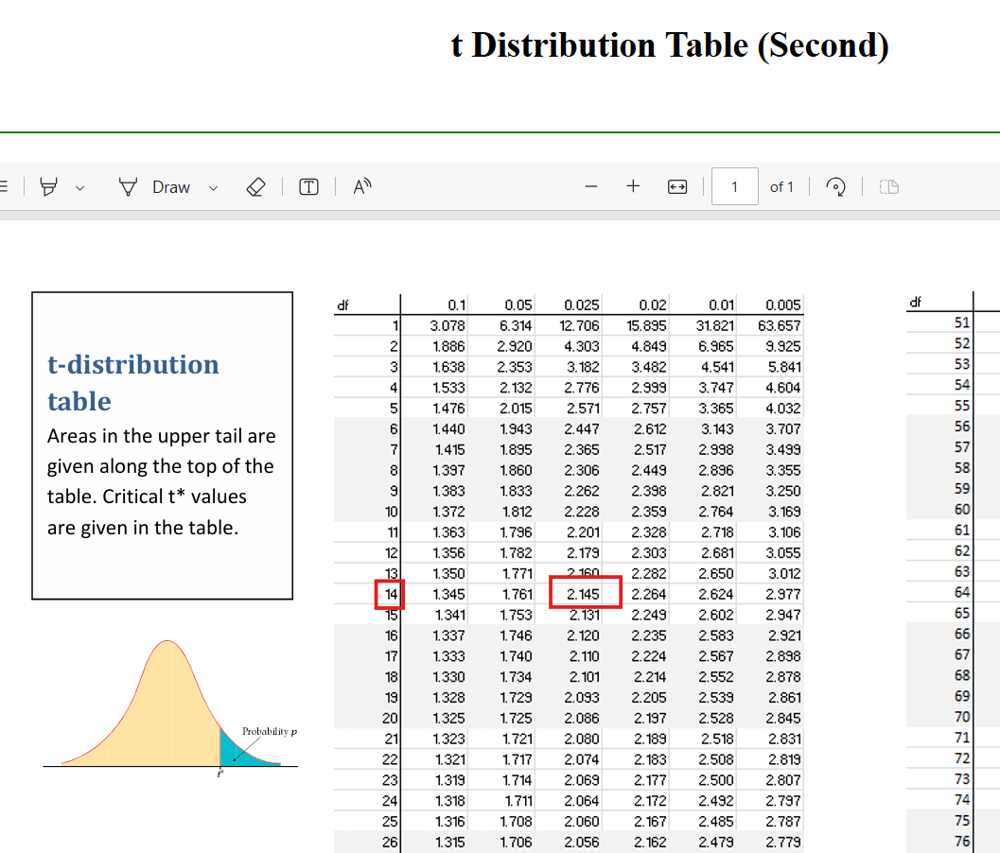
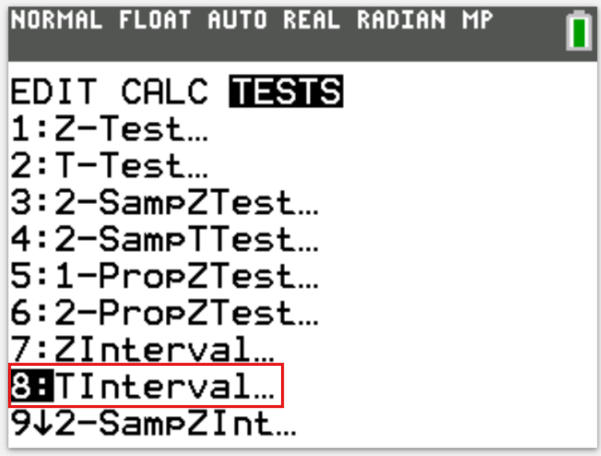
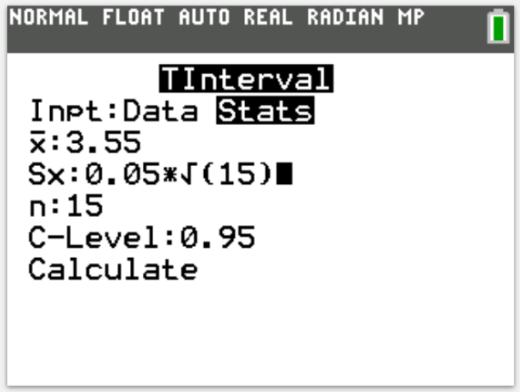
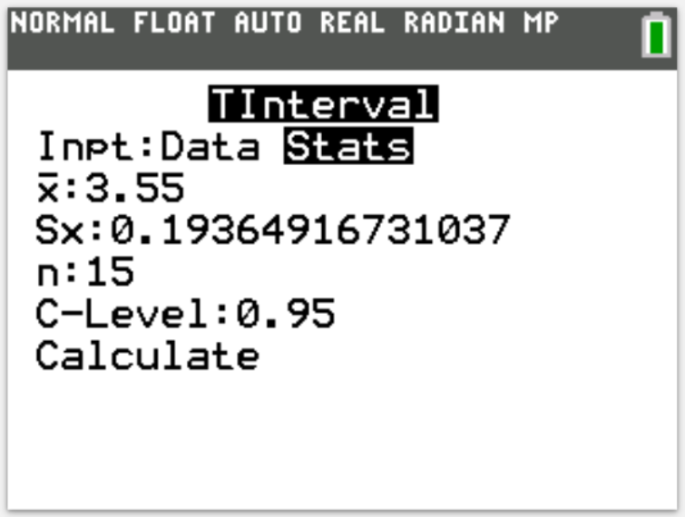
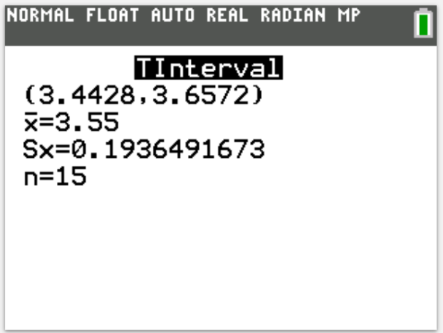

(15.) The mean undergraduate grade point average (GPA) for students accepted at a random sample of 15
medical schools in a country was calculated.
The mean GPA for these 15 schools was 3.55 with a standard error of 0.05.
The distribution of undergraduate GPAs is Normal.
(a.) Determine and interpret the 95% confidence interval.
(b.) Based on your confidence interval, would you believe that the population mean GPA is 3.62? Why or
why not?
$
\text{sample size, } n = 15 \\[3ex]
\text{sample mean, } \bar{x} = 3.55 \\[3ex]
\text{standard error, } SE = 0.05 \\[3ex]
\text{sample standard deviation, } s = SE * \sqrt{n} \\[3ex]
s = 0.05 * \sqrt{15} \\[3ex]
s = 0.1936491673 \\[3ex]
$
Let us solve the question using at least two approaches: Formulas and Tables, and Technology.
Because the:
(1.) Distribution is normal
(2.) Sample size is less than 30
(3.) Sample standard deviation was given/found
(4.) Confidence interval is needed
We shall use the
t-distribution for the Tables and
TInterval for the Technology.
1st Approach:
Formulas and Tables
$
\text{Confidence Level, } CL = 95\% = 0.95 \\[3ex]
\text{Significance Level, } \alpha = 1 - 0.95 = 0.05 \\[3ex]
\dfrac{\alpha}{2} = \dfrac{0.05}{2} = 0.025 \\[5ex]
\text{Degrees of freedom, } df = n - 1 = 15 - 1 = 14 \\[3ex]
\text{Critical value of t, } t_{\dfrac{\alpha}{2}} = 2.145 \\[5ex]
$

$
\text{Margin of Error, } E = \dfrac{s * t_{\dfrac{\alpha}{2}}}{\sqrt{n}} \\[10ex]
E = \dfrac{0.1936491673 * 2.145}{\sqrt{15}} \\[5ex]
E = 0.10725 \\[3ex]
\text{Lower Confidence Limit, } LCL = \bar{x} - E \\[3ex]
LCL = 3.55 - 0.10725 \\[3ex]
LCL = 3.44275 \\[3ex]
\text{Upper Confidence Limit, } UCL = \bar{x} + E \\[3ex]
UCL = 3.55 + 0.10725 \\[3ex]
UCL = 3.65725 \\[3ex]
\text{95% confidence interval} = (3.44275, 3.65725) \\[3ex]
$
2nd Approach:
Technology
Step 1:




We are 95% confident that that the population mean undergraduate grade point average (GPA) is
between 3.44275 and 3.65725
(b.) Since 3.62 is within the bounds of the confidence interval, it is plausible that the
population mean GPA is 3.62.